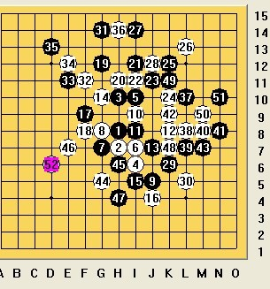

郁闷啊！请教
首页
茗弈阁
#1 郁闷啊！请教 作者：茗弈宽容 发表时间：2010-12-9 11:34:03

在禁一下的一盘棋，我执黑，前边感觉很优的啊，33手后黑丢先最后被杀。请教各位老师朋友，黑33下哪比较好？前边有没更强的下法？
［ 茗弈七夜 于 2010-12-9 11:54:54 时花20金币送鲜花一朵］
#2 Re:郁闷啊！请教 作者：茗弈七夜 发表时间：2010-12-9 11:53:42
=======上图对应的爱五子棋谱代码如下，以便你拆解：========
h8h9h6i10i6i9g9g8j11i7i8k8j9g6i11j12f7f8g4h5i4i5j5k6k4l3k10l11g11h11h12
======================================================仅仅是个人的看法，这样下是否会好一些？
#3 Re:郁闷啊！请教 作者：茗弈宽容 发表时间：2010-12-9 12:00:30
谢谢夜儿
=======上图对应的爱五子棋谱代码如下，以便你拆解：========
h8h7h10i6i10i7g7g8j5i9i8k8j7g10i5j4f9f8g12h11i12i11j11k10k12l13k6l5g5h5h4f6
======================================================这样黑上下分断了不太好做棋似乎。 ［ 茗弈七夜 于 2010-12-9 12:18:16 时花20金币送鲜花一朵］
#4 Re:郁闷啊！请教 作者：茗弈宽容 发表时间：2010-12-9 12:02:57
这个15是弟弟诚心告诉我的黑优，前边下着也似乎是的，但我后边没把握控制好、。 ［ 茗弈七夜 于 2010-12-9 12:21:28 时花20金币送鲜花一朵］
#5 Re:郁闷啊！请教 作者：茗弈七夜 发表时间：2010-12-9 12:17:21
=======上图对应的爱五子棋谱代码如下，以便你拆解：========
h8h9h6i10i6i9g9g8j11i7i8k8j9g6i11j12f7f8g4h5i4i5j5k6k4l3k10l11g11h11h12f10h13i12g13j10g10g12h4j4f5f4e13f13e14f12f11e12d11
======================================================师父，我看了下，黑好像是杀不了，只能控控盘吧。（只是个人见解） ［ 茗弈宽容 于 2010-12-9 12:22:03 时花20金币送鲜花一朵］
#6 Re:郁闷啊！请教 作者：茗弈宽容 发表时间：2010-12-9 12:23:49
嗯。暂时这样吧，谢谢宝贝徒弟帮忙。不知道其他老师和朋友有没别的看法？
#7 Re:郁闷啊！请教 作者：yoda 发表时间：2010-12-9 12:45:13
没检验，最强一路吧。
=======上图对应的爱五子棋谱代码如下，以便你拆解：========
h8h9h6i10i6i9g9g8j11i7i8k8j9g6i11j12f7f8g4h5i4i5j5k6k4l3e7d7h3f5h4j4g5i3h11k11e9
======================================================［此帖子已被 yoda 在 2010-12-9 12:46:09 编辑过］
［ 茗弈七夜 于 2010-12-9 13:07:40 时花20金币送鲜花一朵］
［ 茗弈七夜 于 2010-12-9 13:07:58 时花20金币送鲜花一朵］
［ 茗弈七夜 于 2010-12-9 13:08:23 时花20金币送鲜花一朵］
［ 茗弈宽容 于 2010-12-9 14:22:15 时花20金币送鲜花一朵］
［ gerbo 于 2010-12-13 9:24:34 时花20金币送鲜花一朵］
［ gerbo 于 2010-12-13 9:24:49 时花20金币送鲜花一朵］
［ gerbo 于 2010-12-13 9:25:02 时花20金币送鲜花一朵］
#8 Re:郁闷啊！请教 作者：茗弈七夜 发表时间：2010-12-9 13:05:21
已检查，万分感谢李大师！
#9 Re:郁闷啊！请教 作者：记忆之城 发表时间：2010-12-9 13:42:35
=======上图对应的爱五子棋谱代码如下，以便你拆解：========
h8h9h6i10i6i9g9g8j11i7i8k8j9g6i11j12f7f8g4h5i4i5j5k6k4h7
======================================================请教：26挡里面怎么杀？
#10 Re:郁闷啊！请教 作者：茗弈宽容 发表时间：2010-12-9 14:23:09
李老师这个27必胜了，谢谢！
#11 Re:郁闷啊！请教 作者：茗弈宽容 发表时间：2010-12-9 14:35:59
=======上图对应的爱五子棋谱代码如下，以便你拆解：========
h8h7h10i6i10i7g7g8j5i9i8k8j7g10i5j4f9f8g12h11i12i11j11k10k12h9j13j12l13m14k13
======================================================9楼朋友的那个26
#12 Re:郁闷啊！请教 作者：记忆之城 发表时间：2010-12-10 2:24:20
谢谢宽容大侠
#13 Re:郁闷啊！请教 作者：米 发表时间：2010-12-10 9:00:32
=======上图对应的爱五子棋谱代码如下，以便你拆解：========
h8h9h6i10i6i9g9g8j11i7i8k8j9g6i11j12f7f8g4h5i4i5j5k4d7e7g11h11d8
======================================================
=======上图对应的爱五子棋谱代码如下，以便你拆解：========
h8h9h6i10i6i9g9g8j11i7i8k8j9g6i11j12f7f8g4h5i4i5j5k4d7k6k7
======================================================本局黑23占据好点已经必胜了，补充另一个24的杀法，25是取得上下联络的关键手。
［ 茗弈宽容 于 2010-12-10 15:05:52 时花20金币送鲜花一朵］
#14 Re:郁闷啊！请教 作者：yoda 发表时间：2010-12-10 10:00:55
两个24大同小异。
=======上图对应的爱五子棋谱代码如下，以便你拆解：========
h8h9h6i10i6i9g9g8j11i7i8k8j9g6i11j12f7f8g4h5i4i5j5k4h3g2e7
====================================================== ［ 茗弈宽容 于 2010-12-10 15:06:24 时花20金币送鲜花一朵］
#15 Re:郁闷啊！请教 作者：茗弈宽容 发表时间：2010-12-10 15:07:06
感谢两位老师指点！